На конец 2023 года Московский метрополитен занимает 10-е место в мире и 1-ое в Европе по длине эксплатруемых линий. Всего в Московском метро 355 станций(вместе с МЦД(Московский Центральный Диаметр) и МЦК(Московское Центральное Кольцо)). Карта метро
ВАГОНЫ
За 89 лет существования столичного метрополитена в его тунелях ездили разные поезда.
Вагон типа А
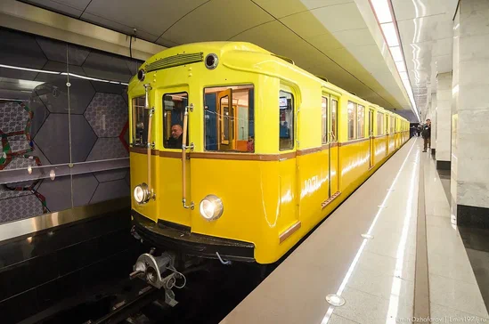Эти вагоны выпускались на Мытищинском вагоностроительном заводе в период с 1934 по 1937 год. Они были спроектированы специально к открытию Московского метро.
Вагон типа Б
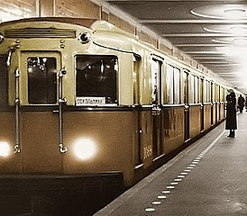Модернизированная версия типа А, выпускалась на том же заводе с 1937 по 1939 год.
Вагон типа В
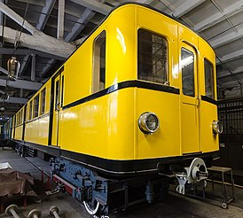Вагоны типа В производились в Германии с 1926 по 1927 год, после победы в Великой Отечественной Войне в качестве репараций Советский Союз вывез 120 таких вагонов, а в Союзе они прослужили с 1946 по 1966 год.
Вагон типа Г
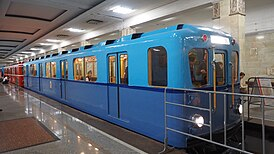Вагоны типа Г серийно выпускались в 1939-1940, 1947-1955 годах и эксплуатировались в Московском и Ленинградском метрополитенах до 1983 года.
Вагон типа Д
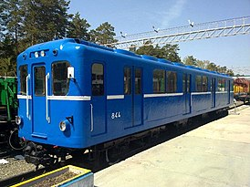Вагоны типа Д выпускались в 1955-1963 годах и эксплуатировались с 1955 по 1995 года.
Вагон типа Е
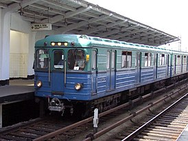Серийно выпускались в 1963-1969 годах и эксплуатировались в 1960-2008 годах.
Вагон типа Еж3
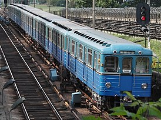ВЫпускались в 1973-1979 годах, а в Московском метро эксплуатировались с 1973 по 2020 года.
Номерной вагон
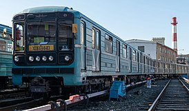Вагоны стали настолько популярными, что эксплуатируются с 1977 года по сей день.
Вагон "Яуза"
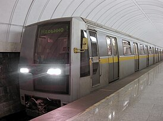Выпускались с 1991 по 2002 года и эксплуатировались в Московсокм метро в период с 1998 по 2019 года.
Вагон "Русич"
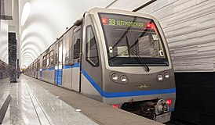Серийно выпускались заводом ОАО "Метровагонмаш" с 2003 по 2013 год и до сих пор катаются по Московским тунелям метро.
Вагон "Ока"
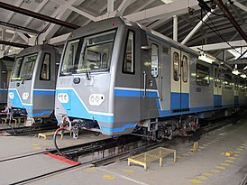Выпускались с 2010 года на ОАО "Метровагонмаш" и Тверском вагоностроительном заводе с 2011 по 2016 год, эксплуатируются с 2012 года.
Вагон "Москва"
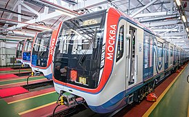"Москва" выпускается с 2016 года и продолжает ездить по Московскому метро.
Вагон "Москва-2020"

Выпсукались с 2020 по 2023 года, одни из самых новых поездов метро Москвы.
Вагон "Москва-2024"
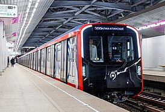Самые новые поезда ,разработанные и выпускаемые с 2023 года.